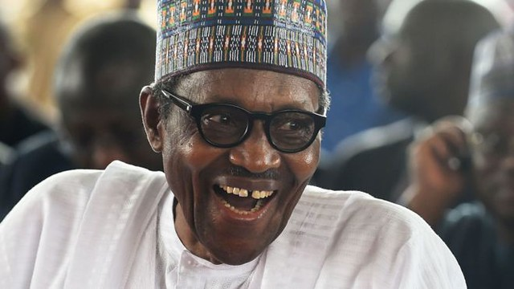

Personalidade
O Presidente da Nigéria é o chefe de governo e chefe de Estado da República Federal da Nigéria. Oficialmente nomeado Presidente da República Federal da Nigéria e comandante-em-chefe das Forças Armadas da Nigéria. O atual Presidente da Nigéria é Muhammadu Buhari.
Jay-Jay Okocha: Com um estilo de jogo muito parecido com o de Ronaldinho Gaúcho, é considerado um "Showman". Okocha sem dúvida foi um dos jogadores mais habilidosos da história do futebol, driblava com uma facilidade incrível e sempre estava renovando seu repertório de lances geniais. Também tinha um bom chute com as duas pernas, assim como passe e visão de jogo.
Começou sua carreira no Enugu Rangers, mas ao visitar um velho amigo que morava na Alemanha, aproveitou para realizar um teste no Borussia Neunkirchen. O garoto nigeriano encantou os alemães, que logo decidiram investir no meia. Ficou por duas temporadas no clube que estava na terceira divisão, trocando-o pelo Eintracht Frankfurt em 1992. Já na primeira temporada, levantou a torcida com seus dribles e passes diferenciados, tornando-se ídolo. Em 1993, marcou um golaço em que driblou toda a defesa do Karlsruhe, inclusive o goleiro Oliver Kahn mais de uma vez, ganhando o mérito de gol do ano na Alemanha, e caso houvesse na época o Prêmio Puskas, de gol mais bonito, provavelmente teria vencido. Ainda neste ano, venceu a Fuji-cup, competição já extinta. Em 1995, Jay-Jay e mais alguns jogadores entraram em conflito com o técnico Jupp Heynckens, abandonando o clube. Seu próximo destino foi o Fenerbahçe, onde o atleta fez duas grandes temporadas e aperfeiçoou suas cobranças de faltas, marcando muitos gols desta maneira. Conquistou a Copa da Turquia e foi muito querido pela calorosa torcida turca. Teve uma ótima média de gols, balançando às redes adversárias 30 vezes em 60 aparições
Wankwo Kanu: Um dos poucos jogadores a ter praticamente dois metros de altura e mesmo assim ser técnico e veloz. Kanu foi um dos melhores atacantes dos anos 90. Iniciou sua carreira no Federation Works, e logo aos dezessete anos transferiu-se para o Ajax da Holanda. Ficou por duas temporadas na equipe de Amsterdam, ganhando destaque no ano de 1995, na qual fez muitos gols e foi importante para o time na conquista da Liga dos Campeões da Europa, vencendo o Milan na final. Nwankwo fez grande parceria com Davids, Seedorf e cia, naquela inesquecível "safra" holandesa revelada pelo Ajax. Por cerca de cinco milhões de dólares (quantia alta na época), Kanu foi vendido para a Inter de Milão, mas antes de desembarcar na Itália, foi o capitão da equipe nigeriana campeã nas Olimpíadas. Seu desempenho foi excelente, marcando três gols (dois contra o Brasil nas semi-finais) e jogando o "fino da bola". Tudo era alegria na vida do garoto nigeriano até que os testes físicos de pré´temporada na Internazionale começaram. Exames revelaram problemas cardíacos e Nwankwo teve de passar por uma cirurgia para substituir uma válvula aórtica, deixando o atleta quase nove meses sem poder jogar futebol. Em 2012 quando anunciou a aposentadoria aos 36 anos.